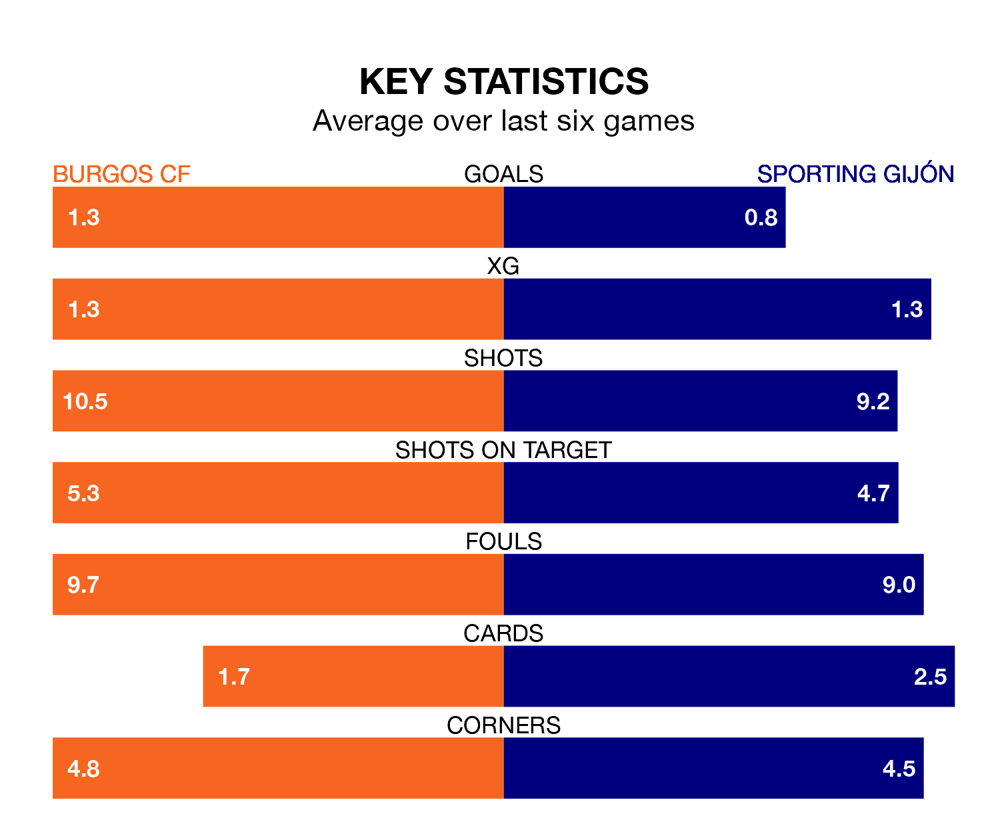

Sporting Gijón travel to Burgos CF on Sunday in the Segunda División.
The visitors come into the game on the back of a draw in their last match, having tied with Real Valladolid 1-1 at home, with a goal from José Ángel.
Burgos, meanwhile, lost their last match, 5-0 against Real Oviedo.
With 34 goals in 27 games so far this season, Burgos are scoring more than average in the league with 1.3 goals per game. But they are conceding more than average too, letting in 37 goals at a rate of 1.4 per game.
Sporting are also above average scorers, with 1.2 goals per game, compared to a league average of 1.1. They have conceded 0.9 goals per game.
In the last 10 years, Burgos and Sporting have played each other on six occasions. Sporting won two of them and they drew four times.
On average, Burgos scored 0.3 goals and Sporting 0.7 in those matches.
Their last meeting was on September 2, when Sporting won 2-1 at home.
The visitors are fourth in the table after 27 games, of which they have won 11 and drawn 10, earning 43 points.
The home side are seven places behind Sporting in 11th, with 11 wins and six draws putting them on 39 points.
In Orlando Rubén Yáñez Alabart, Sporting can rely on one of the league's safest pair of hands. He has kept 11 clean sheets in his 25 appearances this season, and only two other 'keepers – Leganés's Diego Conde and CD Tenerife's Juan Soriano Oropesa – have been able to prevent the opposition scoring on more occasions in the Segunda División.
In Burgos's net, José Antonio Caro Díaz has 10 clean sheets in 27 games. He has conceded a goal every 71 minutes, 50% more often than the 107 minutes between goals for Yáñez Alabart.
Burgos are in mixed form in the Segunda División, with three wins and three losses from their last six games.
With two wins and two draws over that period, the away team's form is slightly worse – they have taken eight points from 18, compared to the hosts' nine.
Sunday's match will be refereed by José Luis Guzmán Mansilla, who has taken charge of 13 Segunda División games so far this season, issuing two red cards and booking 70 players. He has awarded six penalties.
The last Burgos game Guzmán Mansilla refereed was a 2-0 away loss to CD Eldense on November 5. He is yet to oversee a match featuring Sporting this season.
Updated: 10:08 (UTC), 23/02/24